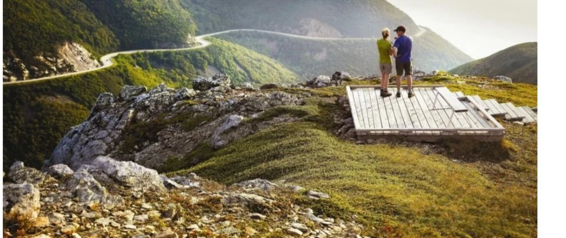
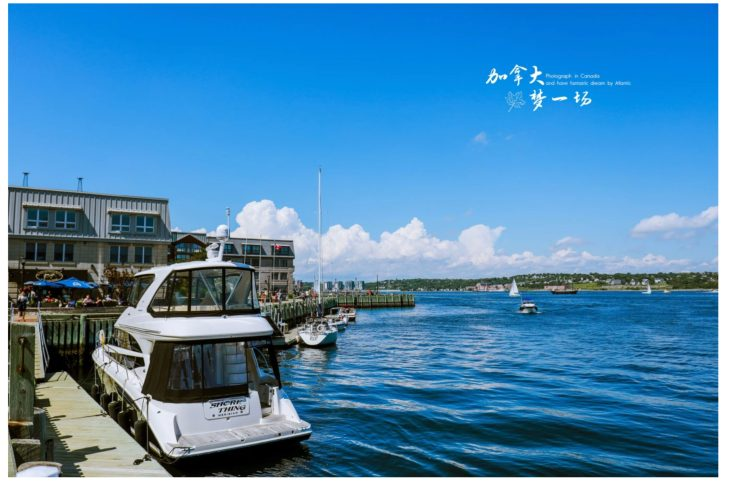
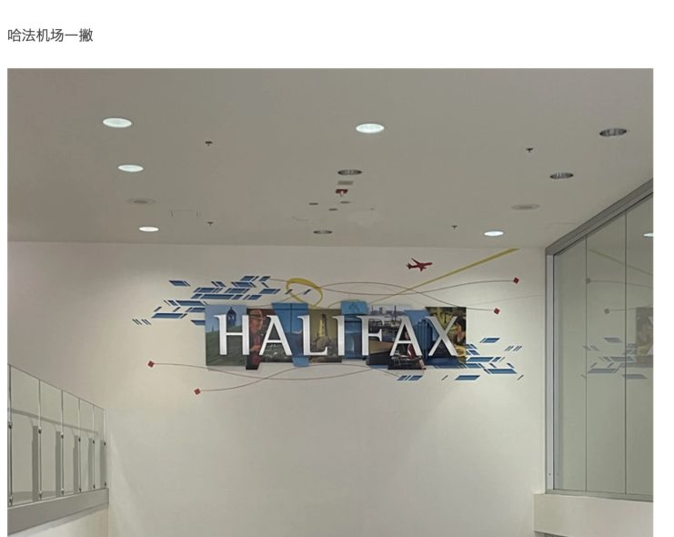

多伦多LOCAL TABLE / EAT
El Catrin Destileria
墨西哥料理 · Distillery District传统蒸馏厂街区的墨西哥料理与露台，适合街区散步后用餐。
查看餐厅完整详情 ↗从世界级博物馆到北大西洋海岸，每个栏目默认完整展示一到两行；按主题筛选，或点击「显示更多」探索全部目的地。
133 条深度景点及各城市经典地标，继续保留三图画廊。按城市和主题筛选；每处附真实评价与游记的外部阅读入口。
为 19 个目的地精选各两家具体餐厅，也标注附近小镇的餐饮选项。支持按城市查看菜单方向、位置与推荐依据；不展示未经核实的评分和价格。
传统蒸馏厂街区的墨西哥料理与露台，适合街区散步后用餐。
查看餐厅完整详情 ↗适合分食小盘菜，结合古酿酒厂区艺术与夜景。
查看餐厅完整详情 ↗瀑布区餐饮选择，主打观景位置；高峰时段建议预留排队时间。
查看餐厅完整详情 ↗以尼亚加拉地区食材为特色的精致餐饮选项，适合特别一餐。
查看餐厅完整详情 ↗历史建筑中的金斯顿老牌餐厅，适合老城步行路线。
查看餐厅完整详情 ↗面包、糕点与早餐选择，适合出发探索千岛湖之前。
查看餐厅完整详情 ↗探索当地街市、独立书店、设计小店、农产品与海洋工艺。每个推荐提供适合购买的商品和地图入口，营业时间与价格请出行前核实。
来自旅行者的真实记录，图文与旅行经历并行。先浏览三篇精选，再向下展开更多原帖游记。
已收录 13 篇马蜂窝游记；首页先展示完整一行，点击下方按钮可在原位置展开更多图文。最新游记由 3 份 PDF 按顺序合并为 1 篇。

2025年夏，8天自驾走访加拿大海洋三省。沿着大西洋海岸寻找灯塔、海滨小镇与当地风味，按原帖 part1 → part2 → part3 的顺序阅读完整图文。

从哈利法克斯港口与海岸开始，记录城市街巷、历史建筑、灯塔、旅途见闻及海边日落，沿着作者的多周行程慢慢展开。

同系列的春季独立篇章：从公共图书馆、泰坦尼克纪念展和墓园，到冰球赛场、海滨城市建筑及林间步道。与此前的同名游记有部分开头重合，但后半段不同。
没有找到匹配的游记，请更换搜索词或城市。
结合航班、城际交通、住宿区域、餐厅选择、天气和轮渡安排。每个城市都可查看具体餐厅及原始推荐依据。
安省和魁省可以查询 VIA Rail；海洋省份可比较自驾与 Maritime Bus。PEI 通过联邦大桥连接新不伦瑞克，纽芬兰另需飞机或跨海轮渡。
查询铁路路线 ↗提供每站适合过夜的市中心、海滨、老城区或自然景区基地，并附上住宿搜索链接。未接入酒店库存，因此不显示未经核实的房价或空房。
浏览目的地指南 ↗从蒙特利尔贝果、PEI 牡蛎，到哈利法克斯龙虾和纽芬兰鳕鱼，按城市提示特色料理与适合觅食的街区。
生成每日餐饮建议 ↗从加拿大任何城市出发，输入日期后优先匹配行程首站机场；如行程终点不同，还可比较多城市机票。并提供 Google Flights 与比价入口。
选择出发地与航班 ↗春秋温差较大，海洋省份风雨多变；冬季驾驶需提前评估雪况与轮渡运行，夏季热门海岸景点及住宿需预留预约时间。
按主题挑选景点 ↗自驾前确认异地还车、轮渡载车许可、过桥费和保险；纽芬兰必须另行安排航班或 Marine Atlantic 跨海运输，并预留缓冲日。
查看轮渡官方链接 ↗涵盖 PEI、纽芬兰、芬迪湾、魁北克和多伦多观景渡轮；附航程、季节性、乘车建议、换乘提醒及运营方时刻表。
从新不伦瑞克省可经 Confederation Bridge 联邦大桥开车上岛；也可根据路线选择新斯科舍省 Caribou — PEI Wood Islands 轮渡。自驾时请比较往返路径、车辆收费与天气。
三个平台均提供官方网站入口。页面不代替租车公司实时报价、预订或保险条款。
租车建议：确认租车年龄及驾照要求、信用卡押金、保险和车损免赔额；跨省或乘轮渡运输租赁车辆前，务必询问租车公司是否允许，纽芬兰可能涉及跨海和异地还车限制。
已经看过景点、餐厅和旅行心得？打开专属规划页，设定加拿大出发城市与日期，串联每天的行程、航班与地图。
打开独立规划页面 ↗不用填写任何城市或日期。直接翻阅来自马蜂窝、Tripadvisor 旅行者与 Lonely Planet 的经典多日路线，查看完整逐日安排，找到下一段旅行灵感。
浏览经典旅行线路 ↗